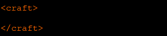
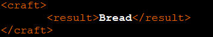
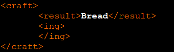
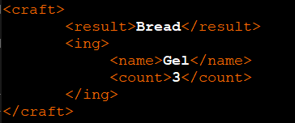
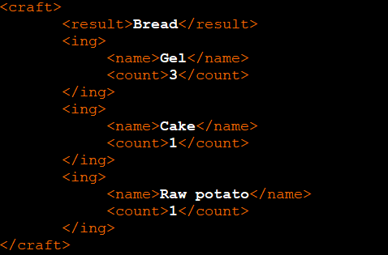

Create an empty xml file in your mod folder. To do this, open any text editor and save the file with the extension .xml and name it "crafts"
All information about your new crafts will be stored in the file crats.xml and to create new crafts you must have basic knowledge in the XML markup language.
To create new craft you should open element <craft> This will looks like that:

Next need to write item name that player got in result of craft. To do this you need just inside <craft> create new element <result> with name of item. This should looks like that:

Next you need all your ingredients for this recipe, open new element inside <craft> with name <ing>

And inside element <ing> need open two more elements <name> and <count>
<name> - This name of ingredient for craft.<count> - This count of ingredients with this name you need for craft.

If you need more then one type of ingredients for craft just add one more <ing> element. One craft can have not more than 3 ingredient types for craft.

Now in game you will see your new craft! Good job!
If this does not work, then you are somewhere wrong. Download ready xml example from this guide and roll it up with your.